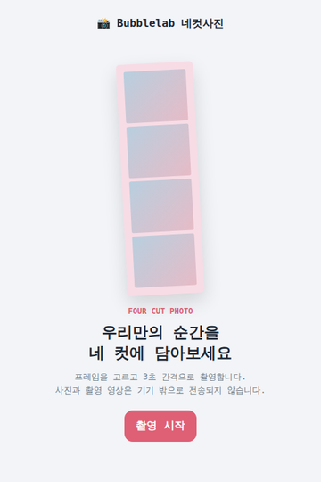

← bubblelab works / Selected work
웹 도구네컷사진
프레임을 고르고 3초 간격으로 자동 촬영 — 브라우저로 찍는 네컷사진.

라이브로 열기 →Overview
카메라 권한만 허용하면 3초 간격으로 네 컷을 자동 촬영해 프레임에 담아 줍니다. 완성된 네컷 사진과 촬영 영상을 저장·공유할 수 있고, 사진과 영상은 기기 밖으로 전송되지 않습니다.
Notes
- 개인정보 안전 — 촬영·합성 모두 브라우저 안 — 기기 밖 전송 없음
- 프레임·자동 촬영 — 프레임 선택, 3초 카운트다운 4연속 촬영
- 사진·영상 저장 — 네컷 시트와 촬영 영상을 각각 저장·공유